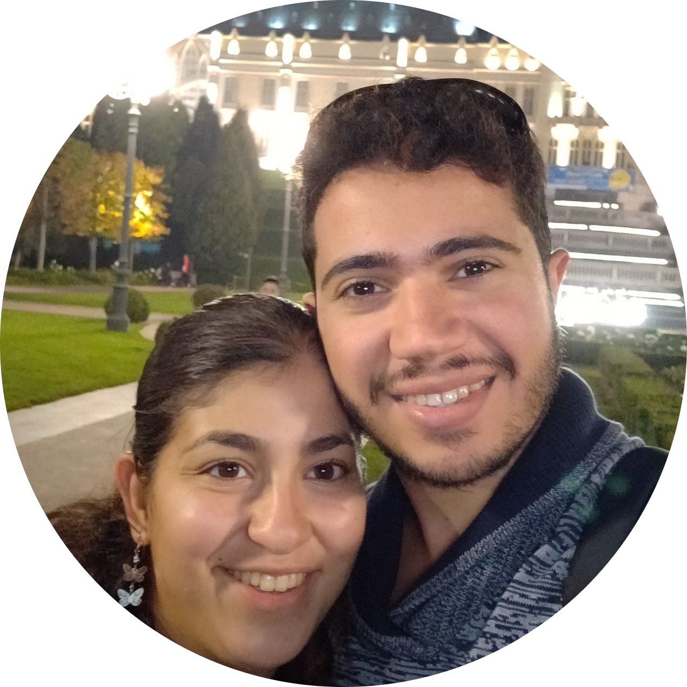

About me
Work experience
Education
Projects
Contact me

Din Eilie
Software Developer
CAREER OBJECTIVE
Experienced
Information Technology Admin well-versed in infrastructure, security planning
and daily operations management. Currently studying
Computer Science
and seeking
Junior Software Developer
position.
WORK EXPERIENCE
IT Administrator
Menora Mivtachim Insurance
2018 – 2021 / Ramat Gan, IL
Member of a
senior team
of technicians that is responsible for
installing software and hardware devices.
Manage and distribute security and infrastructure updates using
IBM BigFix Management.
Manage pools and windows images for virtual machines using
VMware vSphere.
Manage endpoints IP addresses, Group policies and Users using
Active Directory.
Providing support and technical service to all employees of the
organization, agents and CEOs.
Education
B.Sc – Computer Science
The Open University
2020 – PRESENT / Ra’anana, IL
Excellence in Java development course.
Proficiency in Data structures and algorithms course.
Web Development Bootcamp
Dr. Angela Yu
2022 - PRESENT/ Udemy
Microsoft Certified Solutions Associate
John Bryce
2018 / Haifa, IL
Contact me
You can contact me via
Email: dineilie1997@gmail.com
or my phone number: +972-54-9247262.
Feel free to send me a message!
Your Name:
Your Message: